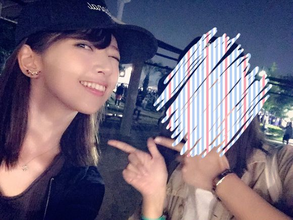
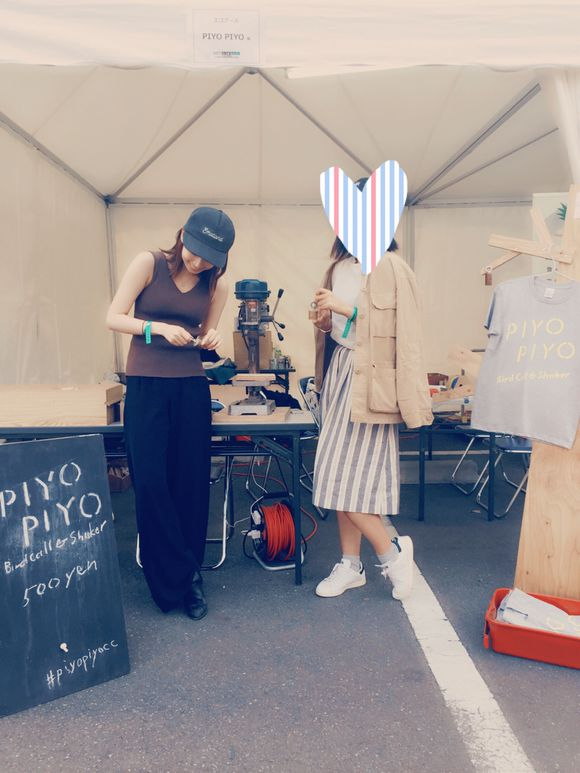

| 2016/05 23 Mon | メトロック！16 |
今年初フェス～メトロック行ってきました～もう夏だ～～！！

マネージャーマユコと！
キュウソネコカミさん→Suchmosさん→OKAMOTO'Sさん→くるりさん→アルカラさん→星野源さん→indigo la Endさん→[Alexandros]さん
を回りました！！
はあ～～～楽しかった～～～日焼けした～～～暑かった～～～！！、
キュウソさんはトップバッターなのに！朝なのに！すごい人！うへぇ！
わたしは会場に着くまでに迷っちゃったから途中から見たんだけど、やはり楽しいなあ！
ライブの後半でのハッピーポンコツ、良いライブ見た感すごく高められる...EXTRA行けなかったの改めて悔やまれる...！
サチモスさんはこの前の渋谷クアトロ振りだったけど、野外のサチモスさんもとてもすてきだった...！！わたしはよく晴れの日に呂布さんとのGIRLを聴くんだけど、他にもあんなにライブハウス栄えする曲がこんな晴天にも合うのか！と！！素敵すぎる今どこにいるか分かんなくなる良い意味で！
オカモトズさんのSUNはとっても貴重だった笑
やー楽しかったなーダンスウィズユー！頭から離れなくなるううあと聴きたい曲あったけど今日はなかったから今度聴きにライブに行きたい！！
新曲がとてもかっこいい！！！新曲なのにみんなノリノリだった！！すごい！
曲終わりのストップモーションみなさん上手すぎてかっこよくてどよめきが起こってた！わたしも思わずかっこいい！って声出た！笑
くるりさんはなんと超前方で見れましたほんと表情を目視できるレベルの前方！MCでの岸田さんがとてもはああ癒される...ああ...この天気の中聴くくるり最高とか思ってたら新曲聴けた新曲がこれまたほんと最高すぎて笑いが出てくるくらい！！しゃんはいがに！！！こはくいろ！！！ワードがなんてお洒落なの...！！！
アルカラさんは初めてライブを観れたんだけど、あんなに面白いの！！？もっと早く行っていたら良かった！バイオリンコラボ豪華でした...
MC面白すぎる...ファブリーズでてくるライブなんて初めて見た...稲村さんとたまたま物販ブースでお会いしたからご挨拶できたんだけど、乃木坂を知ってくれていた、嬉しい...！アブノーマルもたなしんさんも足りない！！！
ご飯たべてたらSOLチームと遭遇！！！たまたま！！！高まる！！
とーやま校長と写真撮ってもらったはいいものの逆光で誰かわかんないから載せられない...ごめんなさい...。笑
星野源さんのライブも収録以外で見るのは初めて！星野源さんの星野源です！を生で聴けておおお本物だ！となりました！！！にしてもバンド豪華...ひゃあ
星野さんの一挙手一投足に周りの女性からかわいい...とため息のような声があがっていました、無敵...SUN！日村SUN！！
インディゴラエンドさん！去年のメトロックでも見たの！でもそれ以来！１年振りに観れた！！！
好きな曲たくさんされてわー私得とか思ってたけど夏夜のマジックはほんとに去年の夏聴きすぎってくらい聴いた曲だったので最高でした始まった瞬間声でた...わたし夏の夜を歌った曲が好きだと気付いたし夏の夜が好きだとも改めて思いました、ステージ中に日が落ちて真っ暗になったので、すごく最高な夏夜だなまさに！と！
そして大トリ、アレキサンドロスさん！！
光栄なことに最近番組やイベントで共演させて頂くことが多かったんだけど、いやいやいやいやなんで共演できてるんだろうわたしって思うステージでした...
もう一曲目のワタリドリでぎゃあああって声が響いた！笑
そこからもう最高のセットリストで...アンコールまで...スターでした...
あーだのじがっだ！！！！！

足は棒のようだけど元気！！！！
休憩時間に

鳥の鳴き声を出せるやつ作りました笑
これなんかすごい面白くて笑い止まらなかった笑
マユコは作ってなかった笑
はー明日からも仕事がんばろう！！！
コメント(948)
2016/05/23 00:15